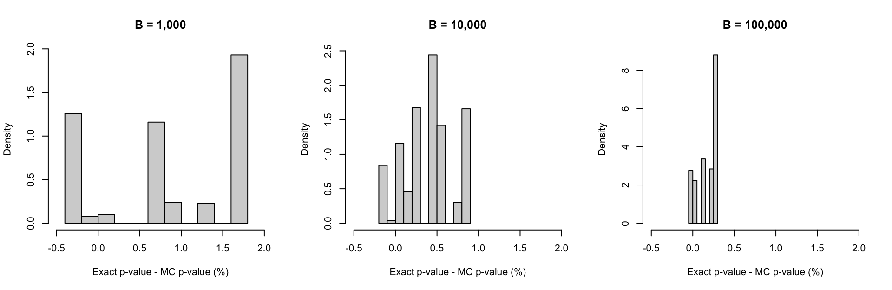

This package implements various nonparametric methods for testing whether two circular samples come from the same population and allows to obtain its associated small-sample distribution. In particular, the following test are considered:
-
dixon: for Dixon test, -
rao: for Rao test, -
wilcox: for Wilcoxon test, -
wwfor Wheeler-Watson test.
The code below presents a simple example with the pigeons dataset of Schmidt-Koenig (1958).
# Load dataset
data(pigeons)
# Dixon test (exact pvalue)
circular_test(pigeons$experimental, pigeons$control)
#>
#> Dixon Two Sample Test
#>
#> Data: pigeons$experimental and pigeons$control
#> Test Statistic: 41
#> Exact P-value: 0.02096
#> Bracketing Points and Pair of Signif. Levels:
#> c1 = 33 (p1 = 0.0567)
#> c2 = 35 (p2 = 0.0460)
# Dixon test (approximated pvalue)
circular_test(pigeons$experimental, pigeons$control, type = "mc")
#>
#> Dixon Two Sample Test
#>
#> Data: pigeons$experimental and pigeons$control
#> Test Statistic: 41
#> Approx. P-value: 0.0228
#> P-value stand. error: 0.0009575
#> based on 10000 Monte-Carlo replicationsIt is also possible to compare the exact distribution of the test statistic under \(H_0\) to the one obtained by simulations. This can be done as follows:
par(mfrow = c(1,2))
plot(circular_test(pigeons$experimental, pigeons$control), cex.main = 0.7)
plot(circular_test(pigeons$experimental, pigeons$control, type = "mc", B = 10^3), cex.main = 0.7)
The simulation-based approach is proposed here as an alternative to reduce the computational burden of then method when the samples are too large to allow for the calculation of the exact sampling distribution through exhaustive enumeration of all possible combinations. When the number of Monte-Carlo replication is relatively large (say around \(10^3\) or more) the results with the exact and approximated method are very close. In addition, this method also provides an estimate of the standard error associated to the obtained p-value, which is computed by nonparametric bootstrap. The precision of the simulation-based approach is illustrated in the simple simulation presented below where we compared the p-values obtained with the exact and simulation-based method.
# Number of simulations
B = 500
# Initialisation
exact_pval = rep(NA, B)
mc_pval = matrix(NA, B, 3)
for (i in 1:B){
# Simulate samples
set.seed(i)
X = runif(8, 0, 360)
Y = runif(7, 0, 360)
# Compute exact pvalue
exact_results = circular_test(X, Y)
exact_pval[i] = mean(exact_results$stat <= exact_results$cv$dist)
# Compute MC pvalue
mc_results = circular_test(X, Y, type = "mc", B = 1000)
mc_pval[i,1] = (1 + sum(mc_results$stat <= mc_results$mc$dist))/(length(mc_results$mc$dist) + 1)
mc_results = circular_test(X, Y, type = "mc", B = 10000)
mc_pval[i,2] = (1 + sum(mc_results$stat <= mc_results$mc$dist))/(length(mc_results$mc$dist) + 1)
mc_results = circular_test(X, Y, type = "mc", B = 100000)
mc_pval[i,3] = (1 + sum(mc_results$stat <= mc_results$mc$dist))/(length(mc_results$mc$dist) + 1)
}The difference between the p-values obtained from the two methods are presented in the histograms below:
par(mfrow = c(1,3))
hist(100*(exact_pval-mc_pval[,1]), col = "lightgrey", probability = TRUE, xlab = "Exact p-value - MC p-value (%)", main = "B = 1,000", xlim = c(-0.5, 2))
hist(100*(exact_pval-mc_pval[,2]), col = "lightgrey", probability = TRUE, xlab = "Exact p-value - MC p-value (%)", main = "B = 10,000", xlim = c(-0.5, 2))
hist(100*(exact_pval-mc_pval[,3]), col = "lightgrey", probability = TRUE, xlab = "Exact p-value - MC p-value (%)", main = "B = 100,000", xlim = c(-0.5, 2))
Install Instructions
To install the TwoCircles package, there is currently one option: GitHub.